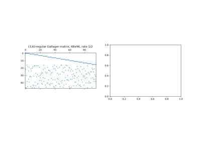
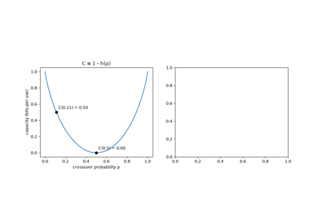
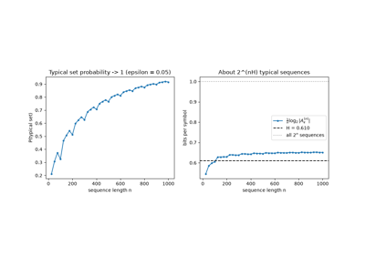
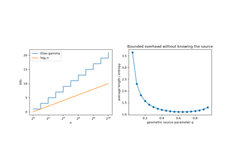

Examples#
This gallery walks through every public feature of mathematicskit.information_theory:
entropy, mutual information and divergence; lossless source codes from
Shannon-Fano and Huffman to arithmetic coding and Lempel-Ziv; channel
capacity, the noisy-channel coding theorem and rate-distortion; and
error-correcting codes from Hamming to Gallager’s LDPC codes.
Each script in this gallery is self-contained and can be run directly with
python examples/information_theory/<section>/<script>.py.
Sections#
entropy – Hartley’s measure, Shannon entropy, mutual information, and the Kullback-Leibler divergence.
source_coding – the typical set, Shannon-Fano and Huffman codes, the Kraft-McMillan inequality, Elias gamma codes, arithmetic coding, and LZ78.
channels – capacity of the binary symmetric and Gaussian channels, random codes, rate-distortion, and Blahut-Arimoto.
channel_codes – Hamming codes, convolutional codes and Viterbi decoding, and LDPC codes with bit flipping.
Channel codes#
Error-correcting codes and their decoders.

Gallager’s low-density parity-check codes (1962-1963)
Channels#
Channel capacity, the noisy-channel coding theorem, and rate-distortion.

Capacity of the binary symmetric channel (1948)
Entropy#
Measures of information: Hartley, Shannon, mutual information, and divergence.
Source coding#
Lossless compression: from the typical set to Huffman, arithmetic, and Lempel-Ziv codes.

Shannon’s source coding theorem: the typical set (1948)

Elias’ universal code for the integers (1975)